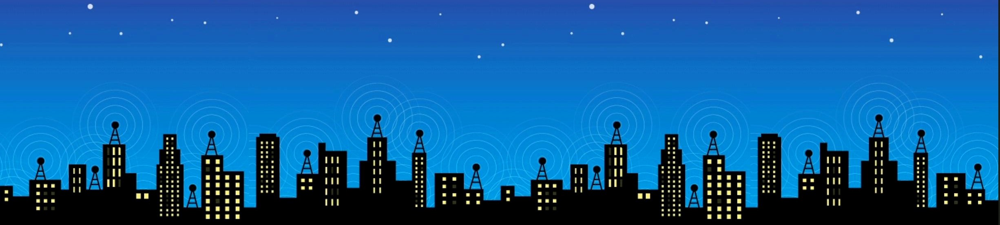

Beer-Sheva
Beersheba, also Be'er Sheva is the largest city in the Negev
desert of southern Israel. Often referred to as the "Capital of the Negev",
it is the center of the fourth most populous metropolitan area
in Israel, the eighth most populous Israeli city with a population of 207,551.
and the second largest city with a total area of 117,500 dunams (after Jerusalem).
The Biblical period references to Beersheva refer to a site, Tel Be'er Sheva, lying
some 2 and a half miles distant from the modern city, which was established the start of
the 20th century when a permanent settlement was established by the Ottoman Turks.The city was
captured by the British led Australian Light Horse during World War I.
In 1947, Bir Seb'a , as it was known, was envisioned as
part of the Arab state in the United Nations Partition Plan for Palestine.
Following the declaration of Israel's independence, the Egyptian army amassed
its forces in Beersheba as a strategic and logistical base.
In the Battle of Beersheba waged in October 1948,
it was conquered by the Israel Defense Forces.
Beersheba has grown considerably since Israel's independence.  A large portion of the population is made up of the descendants of Sephardi
Jews and Mizrahi Jews who immigrated from Arab countries after 1948,
as well as smaller communities of Bene Israel and Cochin Jews from India.
Second and third waves of immigration have taken place since 1990,
bringing Russian-speaking Ashkenazi Jewish immigrants from the former Soviet Union,
as well as Beta Israel immigrants from Ethiopia. The Soviet
immigrants have made the game of chess a major sport in Beersheba and the
city is now a developing technology center. The city is now Israel's national chess center,
with more chess grandmasters per capita than any other city in the world.
Beersheba is home to Ben-Gurion University of the Negev.
This city also serves as a center for Israel's high-tech industry
A large portion of the population is made up of the descendants of Sephardi
Jews and Mizrahi Jews who immigrated from Arab countries after 1948,
as well as smaller communities of Bene Israel and Cochin Jews from India.
Second and third waves of immigration have taken place since 1990,
bringing Russian-speaking Ashkenazi Jewish immigrants from the former Soviet Union,
as well as Beta Israel immigrants from Ethiopia. The Soviet
immigrants have made the game of chess a major sport in Beersheba and the
city is now a developing technology center. The city is now Israel's national chess center,
with more chess grandmasters per capita than any other city in the world.
Beersheba is home to Ben-Gurion University of the Negev.
This city also serves as a center for Israel's high-tech industry